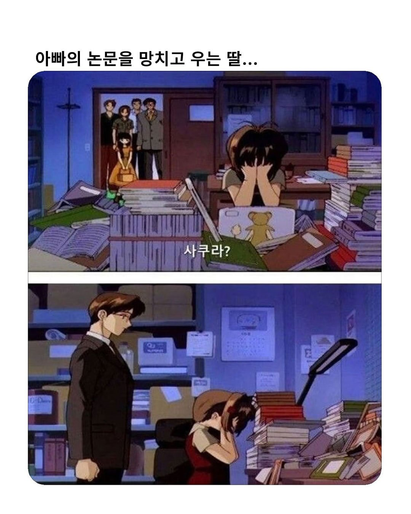
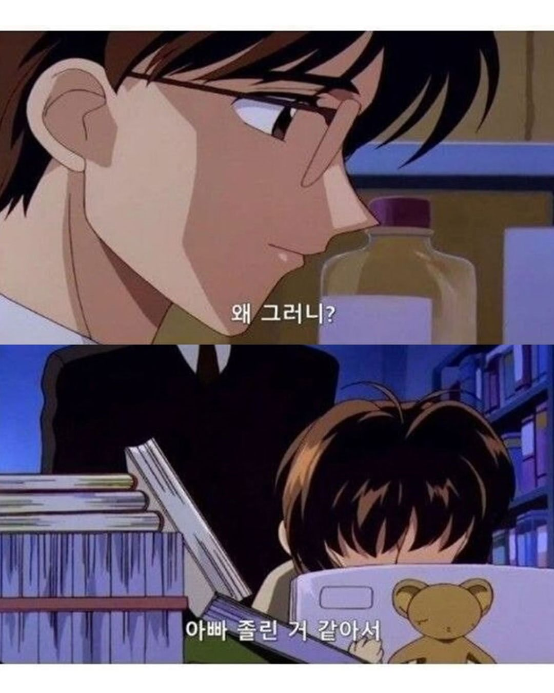
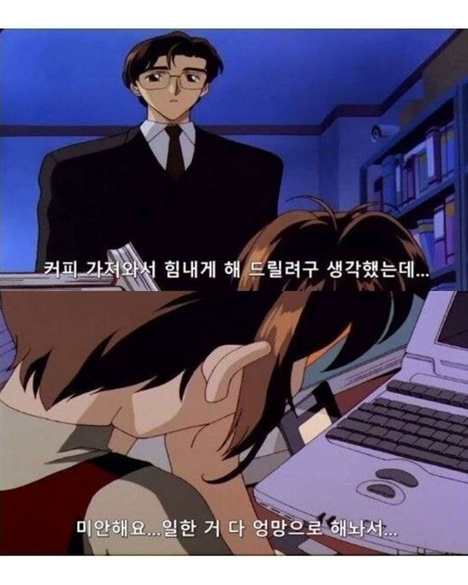
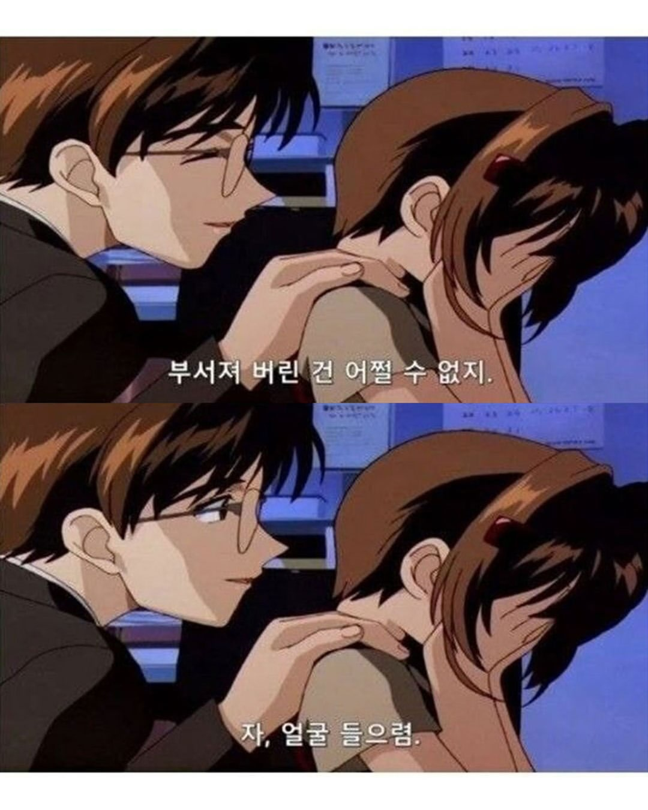
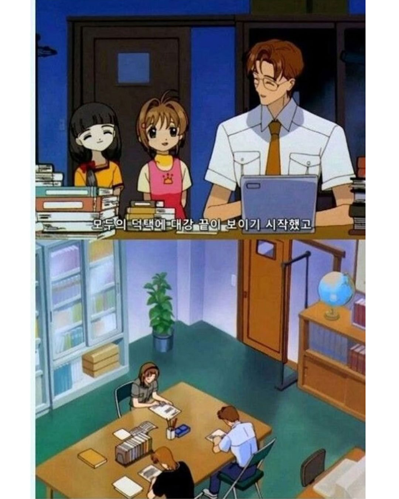

노예는 많단다 체리야





노예는 많단다 체리야

생쥐피티 ㄷ
생텍쥐피티
앗 토큰보다 싸다!
앗! 대학원생,
토큰보다 싸다!
"허허 애가 애비 생각해서 그랬다는데 혼을 낼 수도 없잖나? 자네들이 조금만 고생 좀 하게."
하.. 저저 ㅅ발련..
"니가 교수님 따님이구나?"(시발년 반드시 죽여버리겠다)
생체 AI들이네
어허~ 노예라는 좋은 직함을 두고!
??? : 개씨발
딸도 아빠 닮아서 사람이 익사하는 고통에는 공감하지 못하나 펭귄이 휘말리자 광적으로 흥분하며 구하려고 함.
사람은 죽어
토큰이 왜 필요?
토큰=커피
" 앗 대학원생 토큰 보다 싸다 "
"교수님 따님이 이쁘시네요"
워라벨 봉인해제~
아빠는 방에서 cctv로 감시중인가보네 구도가 ㄷㄷ
대학원 있을때 오토바이 타고다니던 대학원생이 이걸로 교수 딸 밀어버리고 싶다고 노래 부르고 댕겼는데 ㅠ
프로포절 때문에 미쳐버릴것 같다ㅜㅜ
집갈수없어~ 집가고싶은데~ 그런슬픈기분인걸~
니가 교수님 딸이구나? 하는 장면도 나오지 않던가ㅋㅋ
너구나? 너구나? 너구나? 너구나? 너구나? 너구나? 너구나?
씨발련(니가 교수님 딸이구나)
체리아빠 "체리야 네 아빠는 교수란다 잊지마렴"
근데 랩에서 만든 논문이면 이미 여러 컴퓨터에 빽업본 남아있지 않음? 최종 수정 전꺼에서 조금만 바꾸면 될듯?
저 애니 만들어질 당시에는 컴퓨터가 귀했어
저기 나온 검은 생머리가 토모요라고 딸 친구인데 집에 컴퓨터가 없어서 사쿠라네 집에 집 가서 빌려쓰는 장면도 나옴
생체 챗지피티들이 있으니 괜찮단다.